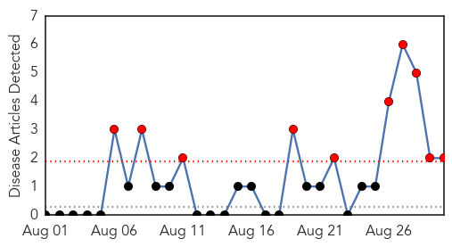
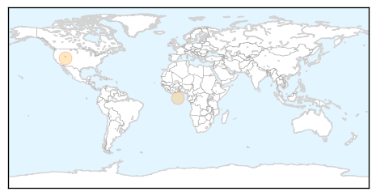
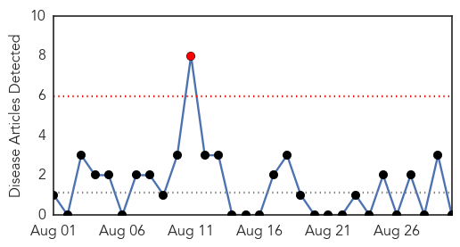
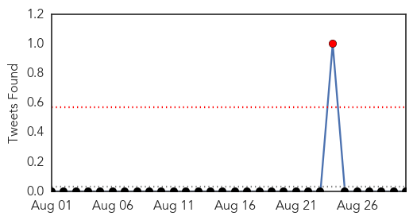

Bubonic Plague
30-Day Web Trend
10 alerts, 0 warnings

30-Day Twitter Trend
0 alerts, 0 warnings

Article Locations
Article Confidences

Top Articles:
Top Tweets:
-
No tweets found for Aug 30, 2015
Chikungunya
30-Day Web Trend
1 alerts, 0 warnings

30-Day Twitter Trend
3 alerts, 0 warnings

Article Locations

Article Confidences

Top Articles:
-
No articles found for Aug 30, 2015
Top Tweets:
-
No tweets found for Aug 30, 2015